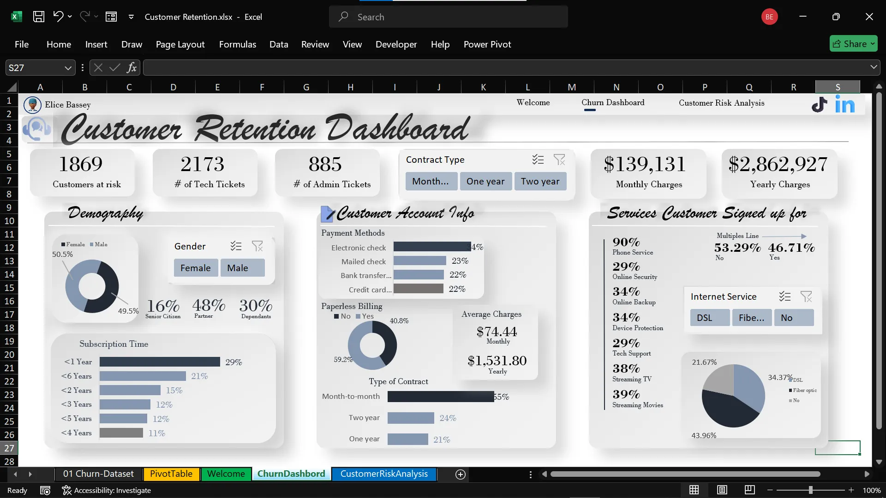

The problem I set out to solve
A churn model produces a ranked list. Leadership does not make decisions from a ranked list; they make them from a screen that says how big the risk is, what it is worth, and where it lives. I built this dashboard as that screen, on the same Telco dataset my prediction model uses, so the two projects tell one story from two angles.
My constraint was the audience. The workbook had to work for someone who will never open a notebook: open the file, land on the dashboard, click a segment, and every number updates. That pushed me to Excel on PivotTables rather than formulas scattered across the sheet, because pivots keep every figure tied to the data by construction.
The questions the screen answers: how many customers are at risk, what is their ticket load and billing, who are they demographically, how long have they been with us, which services do they take, and how do they pay?
The short answer
The dashboard puts the whole churn exposure on one screen: 1,869 customers at risk out of 7,043, carrying 2,173 tech tickets and 885 admin tickets, $139,131 of monthly billing and $2.86M of lifetime billing. The panels explain who they are. Demographically they look like the base (50.5% female, 16% senior citizens), so nothing exotic is driving the risk. The story is in the account panels: 65% of the contract mix is month-to-month at the top of the contract chart, electronic check leads the payment bars, 29% of customers are inside their first year, and the service panel shows the protective add-ons (tech support 29%, online security 29%) barely adopted while phone service runs at 90%. The at-risk customer is not demographically unusual; they are contractually and behaviourally predictable, which is exactly what makes them targetable.

Numbers at a glance
Where they come from: every KPI card is a PivotTable measure on the raw data sheet, and I reconciled each one against a direct profile of the CSV: 1,869 churned rows, $139,131 summed monthly charges, $2,862,927 summed total charges, 2,173 and 885 ticket counts from the pivot. Nothing on the dashboard is typed in by hand.
How to read each number
| Number | How I got it | How to read it |
|---|---|---|
| 1,869 at risk | Distinct count of customerID where churn = Yes, from the pivot layer | 26.5% of the base. This is the population the churn model scores; the dashboard frames it, the model ranks it. |
| 2,173 / 885 tickets | Sum of tech and admin ticket counts for the churned group | The at-risk group generates disproportionate support load, and tech tickets outnumber admin by about 2.5 to 1, which points at the product experience before process. |
| $139,131 monthly | Sum of MonthlyCharges for the churned group | The monthly run-rate walking out the door, about $1.67M annualised if the group held. |
| $2.86M lifetime | Sum of TotalCharges for the churned group | What those customers had paid across their whole stay. My card labels this Yearly Charges; the accurate reading is cumulative lifetime billing, and I flag it openly rather than leave the label wrong. |
| $74.44 vs $64.76 | Average monthly charges, churned group versus the full base | Churners are above-average payers, so the exposure is bigger than the headcount suggests. |
| 90% vs 29% services | Phone service adoption versus tech support and online security adoption | The gap between the near-universal core service and the barely-adopted protective add-ons is the clearest engagement signal on the screen. |
What I found
The risk is not demographic, and that is the good news
Who are the at-risk customers, in plain terms?
The demography panel is deliberately first because it clears the ground: 50.5% female and 49.5% male, 16% senior citizens, 48% with partners and 30% with dependents. Nothing here marks the churned group as unusual. Their gender split matches the base almost exactly.
I say this is the good news because a demographic story would be nearly unactionable: you cannot design a retention offer around who a customer is. An account story, you can.
The subscription-time panel confirms the front-loading: 29% of all customers are under one year of tenure, the largest band on the chart, and the bands shrink steadily out to five years. The risk window is early tenure, before contracts and habits form.
What it means. When demographics are flat and account behaviour is not, targeting should move from who customers are to what they signed and how they pay.
Drop demographic targeting from the retention plan and build it around contract, payment and tenure bands.
The account panels tell the targeting story
Which account features separate the at-risk group?
Three bars do more work than everything else on the screen. Contract type: month-to-month dominates the contract chart at the top of the mix. Payment method: electronic check leads the payment bars, with the two automatic methods tied at the bottom of the mix. Paperless billing splits 59/41, so most at-risk-profile customers are already on the lowest-friction billing path, which makes the payment-method contrast more interesting, not less.
The average charges card sits beside them: $74.44 monthly and $1,531.80 lifetime for the churned group, both above the base averages. The customers these panels describe are not marginal accounts; they are paying meaningfully more than the typical customer.
My churn model quantifies what the bars suggest: month-to-month customers churn at 42.7% versus 2.8% on two-year contracts, and e-check payers at 45.3% versus about 16% on automatic payments. The dashboard shows the mix; the model measures the risk inside it.
What it means. Contract structure and payment friction, both visible on a single dashboard, predict churn better than anything demographic on the same screen.
Aim retention offers at month-to-month, e-check, early-tenure customers first, in that order.
The service panel exposes the engagement gap
What do the at-risk customers buy, and what do they skip?
Phone service sits at 90%, multiple lines split 47/53, and streaming services run 38 to 39%. Then the protective tier collapses: tech support 29%, online security 29%, device protection and online backup 34%. The services that require the provider to actively help the customer are the ones almost nobody takes.
The internet-service pie adds the tier dimension: 43.96% fiber optic, 34.37% DSL, 21.67% no internet. Fiber is the premium product, and my model work shows it is also the churniest at 41.9% against DSL's 19.0%.
Reading the two panels together: the base buys connectivity and entertainment readily but skips protection and support. That is an engagement and packaging problem, and it is fixable with bundling in a way that a service-quality problem would not be.
What it means. Adoption shares are a leading indicator you can watch monthly on this dashboard, long before churn confirms it.
Treat low protective-service adoption as the engagement gap to close, and track whether bundling moves the share.
The ticket cards point at the product, not the paperwork
What does the support load say about the at-risk group?
The churned group carries 2,173 tech tickets against 885 admin tickets, roughly 2.5 to 1. Total support contact across the whole base is 2,955 tech and 3,632 admin, so the at-risk group holds 74% of all tech tickets while being 27% of customers.
That ratio says the at-risk group's problems skew technical: connectivity, devices, service quality. Admin tickets are spread more evenly across the base.
Combined with the fiber-overrepresentation story from the service panel, the picture is consistent: a premium, expectation-heavy product generating technical friction, and the customers experiencing it leaving at elevated rates.
What it means. A 74% share of tech tickets in a 27% slice of customers is a fixable product-experience signal, and the dashboard surfaces it in two KPI cards.
Route proactive technical follow-up to high-value month-to-month customers with open tech tickets, before the cancellation call.
Pivots instead of formulas kept the dashboard honest
How does the dashboard stay trustworthy as the data changes?
I built the figure layer on PivotTables: the raw data lives on its own sheet, a pivot sheet computes every count, share and total, and the dashboard cards and charts read from the pivot output. When the data refreshes, a pivot refresh propagates everywhere at once.
The alternative, hand-typed KPI cards, is where dashboards silently rot: someone updates one card and misses three. Here the only typed things on the dashboard are the labels.
The slicers (contract type, gender, internet service) filter every pivot through one wiring, so a stakeholder can slice to month-to-month fiber customers and watch every card, doughnut and bar update together. That is the interaction model that makes an executive dashboard a tool instead of a screenshot.
What it means. Architecture choices in Excel, like in code, decide whether the artifact stays correct under change.
Build the KPI layer on pivots with one slicer wiring, and keep hand-typed values off the canvas.
What I would do next
Use the slicers the way they were wired
High priority- Evidence
- Contract, gender and internet-service slicers filter every card and chart in one click.
- What to do
- Review the dashboard monthly through the month-to-month lens first, then fiber, then the cross-section; each pass answers a different management question.
- What I expect
- Turns the dashboard from a static screenshot into the segmentation tool it was built to be.
Pair the dashboard with the model's ranked list
High priority- Evidence
- The dashboard frames 1,869 at-risk customers; the churn model scores them individually at 0.858 ROC-AUC.
- What to do
- Feed the top of the model's ranked list into the retention team's worklist, and track outcomes back into the dataset for the next refresh.
- What I expect
- Closes the loop between what the dashboard shows and what the team does.
Fix the Yearly Charges label
Medium priority- Evidence
- The $2,862,927 card sums TotalCharges, which is cumulative lifetime billing, not a yearly figure; the true annualised run-rate is about $1.67M.
- What to do
- Relabel the card to Lifetime Billing, and add a small annualised card beside it so both readings are on screen.
- What I expect
- Removes the one number on the dashboard a sharp reader could misuse.
Add a churn-rate view beside the volume view
Medium priority- Evidence
- The panels show shares of the base (adoption, mix) but not risk rates within segments, which is where the 42.7% versus 2.8% contract contrast lives.
- What to do
- Add a pivot-backed churn-rate-by-contract visual so the screen shows both how big each segment is and how risky it is.
- What I expect
- Prevents the classic mix-versus-rate misreading, where a big safe segment looks riskier than a small dangerous one.
Automate the refresh
Low priority- Evidence
- The workbook reads a static CSV extract; the pivot layer refreshes, the extract does not.
- What to do
- Wire the data sheet to a scheduled export from the source system so the monthly review runs on current data without manual paste.
- What I expect
- Keeps the monthly cadence the recommendations assume from decaying into quarterly.
What this can't tell you
The dashboard shows the churned group as it looked at the snapshot; it is descriptive, not predictive. Which of the remaining 5,174 customers leaves next is the churn model's question, not this screen's.
The $2.86M card measures lifetime billing of customers who already left. It frames the scale of the problem; it is not recoverable revenue, and the forward-looking number is the $139,131 monthly run-rate.
Ticket counts come from the dataset's numeric ticket fields. They measure volume, not cause, so the tech-heavy skew is a signal to investigate, not a proven diagnosis.
The dataset is the public Kaggle telco churn table, a single provider at a single snapshot. Segment patterns on this screen are strong, but they belong to this table.
This workbook is Excel, deliberately: no macros, no Power Query load, no external connections. That makes it portable and audit-friendly, and it also means no scheduled refresh until the data wiring I recommend above exists.